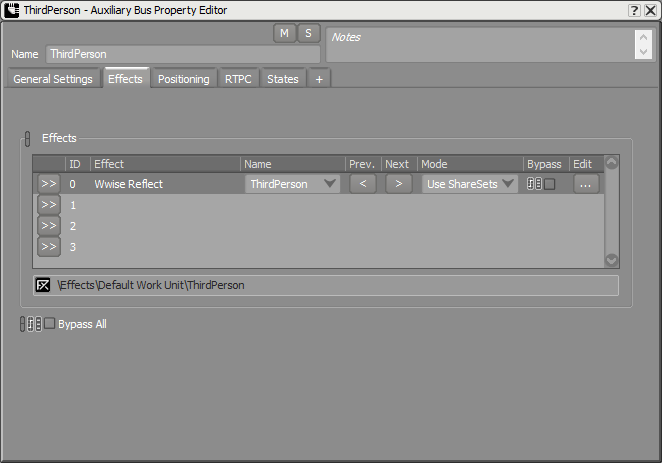
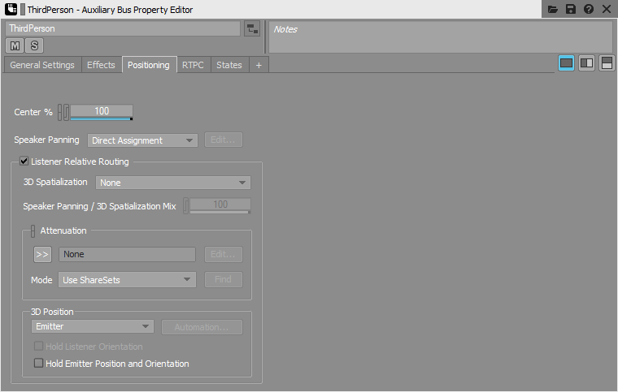
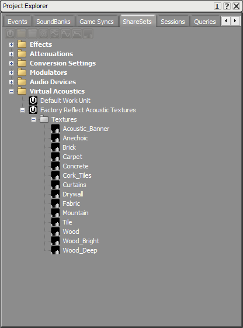
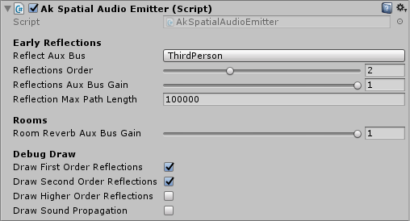
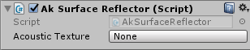
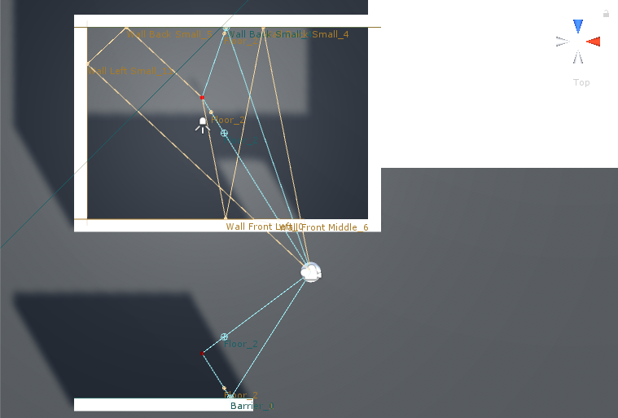
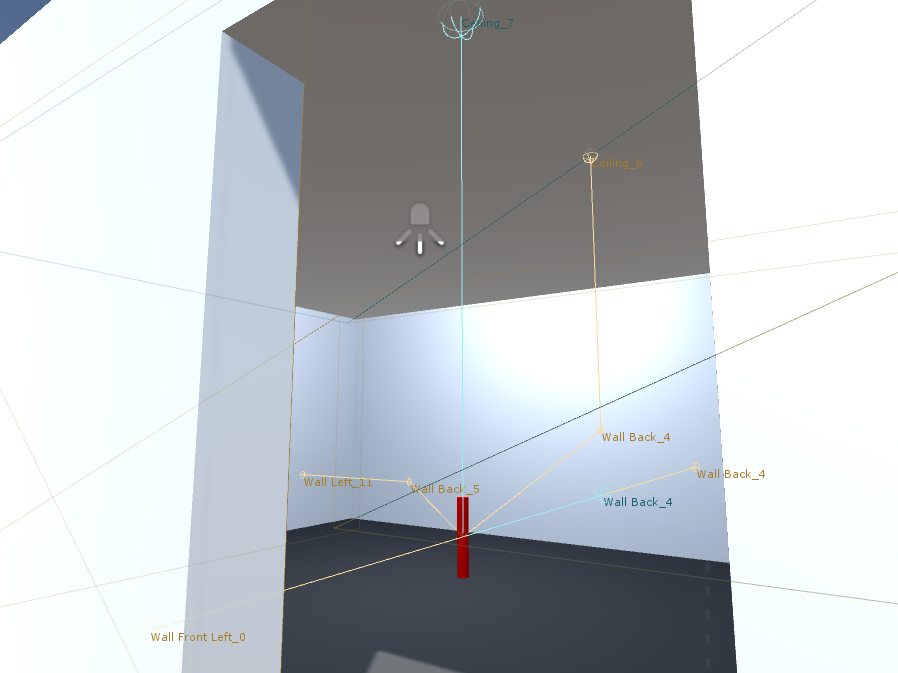
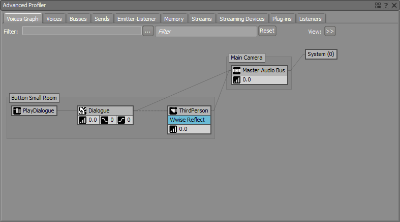
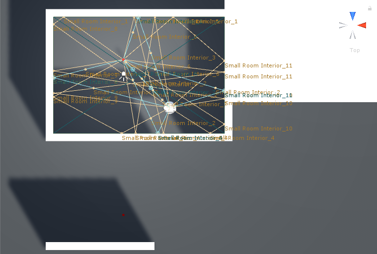

Surface Reflectors Tutorial
In the following steps, this tutorial will show you how to use the new Reflect plug-in with Spatial Audio. You will need a Reflect plug-in license to make the project work.
Note: This tutorial presumes that you have completed the Preparation for the Spatial Audio Tutorials. However, it does not consider if the Rooms and Portals Tutorial was done; both tutorials are independent.
A. Wwise Project（工程）
We need to update our Wwise project with an Auxiliary Bus with the Reflect plug-in and Acoustic Textures.
- Add an Auxiliary Bus under the Master Audio Bus.
- In the Auxiliary Bus Property Editor,
- Under the Effects tab, add the Wwise Reflect Effect. 
Auxiliary Bus Property Editor Effects tab for Reflect
- Under the Positioning tab, enable Listener Relative Routing and select None for the 3D Spatialization. 
Auxiliary Bus Property Editor Positioning tab for Reflect
- Under the Effects tab, add the Wwise Reflect Effect.
- In the Auxiliary Bus Property Editor,
- Import Reflect Acoustic Textures from: Project > Import Factory Assets...
- They will be added to the Virtual Acoustics folder in the ShareSets tab of the Project Explorer view. 
Factory Reflect Acoustic Textures in the Project Explorer ShareSets tab
- (optional) You can add custom Acoustic Textures in the Virtual Acoustics folder under Default Work Unit.
- They will be added to the Virtual Acoustics folder in the ShareSets tab of the Project Explorer view.
- Save your project.
B. Spatial Audio Emitter
We need to modify the spatial audio emitter to use our newly created reflect aux bus.
- Refresh your Wwise project in the Wwise Picker: Windows > Wwise Picker
- Generate SoundBanks

Wwise Picker
- Generate SoundBanks
- Modify the Ak Spatial Audio Emitter component of each button.
- Pick the Reflect Auxiliary Bus for Reflect Aux Bus.
- Choose 2 for the Reflections Order.
- Choose 1 for the Reflections Aux Bus Gain.
- Choose 100000 for the Reflection Max Path Length.
- Check the Draw First Order Reflections and Draw Second Order Reflections under Debug Draw. 
Ak Spatial Audio Emitter for Surface Reflector
C. Surface Reflector Component
You can simulate early reflections with the Ak Surface Reflector component. One way to have surface reflectors is to use existing meshes of the game. If the shape is too complex, you may want to add a new object as a surface reflector.
C.1. Use Existing Meshes
The advantages of using the existing meshes are that you don't need to create new objects and each mesh can have a different acoustic texture. The disadvantages are that if you have a complex figure, you may send too much triangles to the Spatial Audio API and this could slow down your game. Also, another disadvantage is that each mesh only gets assigned one texture. In the case of the this tutorial, this means that it is not possible to have a different acoustic texture on the outside than on the inside of the rooms. In the scene provided by the unity integration, this is the method used for surface reflectors.
- Select all the walls, ceiling and floor from section 3.A. 环境 and add an Ak Surface Reflector component.
- In the Acoustic Texture parameter, choose an acoustic texture or leave it at None to have an unfiltered reflection. 
Ak Surface Reflector component
- In the Acoustic Texture parameter, choose an acoustic texture or leave it at None to have an unfiltered reflection.
- Start the game.
- Since we have enabled the drawing of reflections under Debug Draw in section , you should see rays going from the emitter to the listener in the Scene window. (The ceiling was removed in the following image to see the rays clearly) The blue rays are first order reflections, i.e. they reflect from one surface before reaching the listener, and the yellow rays are second order reflections. The name of the triangles are displayed at the reflection point. A name is made up of the game object's name and the triangle's number. A cube has 12 triangles, two per face. 
Top view of early reflection drawings for existing mesh surface reflectors
- You can see the rays in the Game window by enabling Gizmos; as we can see in the next image. From this point of view, we can also see that the Debug Draw option draws the triangles of the surfaces that are being reflected on. Leaving the ceiling in this view, we can see that the sound will also reflect from the ceiling on triangles 7 and 6. 
First person view of early reflection drawings for existing mesh surface reflectors
- Connect the game in Wwise and go to the Profiler Layout. You should see a similar graph when Button Small Room is emitting. 
Button Small Room Voice Graph with Reflect Effect
- Double click on the Auxiliary Bus with the Reflect Effect in the graph. Navigate to the Effects tab and double click on the Reflect Effect. When playing the sound, you should see the current reflections in the graph and the list of the Reflect Effect Editor. In thw following image, there is a Drywall acoustic texture for all the walls and the ceiling and a Tile acoustic texture for the floor. When there are two textures in the list, it means that the reflection is a second order one.

Reflect Effect Editor View
- Since we have enabled the drawing of reflections under Debug Draw in section , you should see rays going from the emitter to the listener in the Scene window. (The ceiling was removed in the following image to see the rays clearly) The blue rays are first order reflections, i.e. they reflect from one surface before reaching the listener, and the yellow rays are second order reflections. The name of the triangles are displayed at the reflection point. A name is made up of the game object's name and the triangle's number. A cube has 12 triangles, two per face.
C.2. Alternative: Create a New Volume
Creating a new game object with no mesh renderer can simplify a complex shape. In this optional section, we will show you how to have a surface reflector volume for the interior of the small room. You can also mix solutions by having some meshes be Surface Reflectors and having an object with no mesh renderer as well. 示例Having each mesh be a surface reflector to have different texture per wall inside of the house and adding and exterior volume to have a completly different texture on the outside of the house. It is also possible to use Quads instead of cubes to have a different texture wherever desired. But be careful with intersections when using quads; you don't want your sound to get out of your shape.
- Create a simpler unrendered mesh using a cube: GameObject > 3D Object > Cube
Object Name Position Rotation Scale Small Room Interior (-2, 2.875, -6) (0, 0, 0) (11, 5.25, 7.5)
- Remove the Mesh Renderer component
- Check the Is Trigger in the Box Collider component
- add an Ak Surface Reflector.
Start the game.
- Since we simplified the shape of our room, the door is now part of the reflective surface. We don't have any reflections from Button Small Room if we are standing outside. We even get a reflection from Button Outside on the door opening. You may have noticed the name of the reflection point is now referencing to Small Room Interior.

Top view of early reflection drawings for a new surface reflector volume when the emitter is outside
- Entering the small room, Button Small Room's debug drawings appear and the ones for Button Outside disappear. 
Top view of early reflection drawings for a new surface reflector volume when the emitter is inside